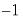
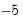

To estimate a threshold regression in EViews, select or from the main EViews menu, then select in the drop-down menu. Alternatively, type
threshold in the command window and press . You will see the following dialog:
There are three distinct sections in the threshold regression page: , , and specification. Since the sample specification should be familiar, we will focus on the first two sections.
In the first edit field of the section you should enter the dependent variable followed by a list of variables with threshold specific coefficients. The list of explanatory variables may include lagged series and ranges of lagged series specified with the word “
to” (lag ranges are common in threshold regression models). In the second edit field, you may optionally specify a list of non-threshold varying regressors.
Next, in the edit field, you should a specification for one or more threshold variables. You may enter this specification as a single integer or integer pairs, or you may provide a list of variables:
In the example depicted above, we specify a threshold regime specific AR(11) specification for LYNX_TRANSF and enter the range pair “1 5” in the edit field. The result is a SETAR model where we will perform model selection for the threshold variable using lags of LYNX_TRANSF from  to .
The page contains additional settings for the calculation of the coefficient covariance matrix, the determination of thresholds, and the coefficient name. Most of the settings are identical to those found in breakpoint least squares, and extensive discussion may be found elsewhere (
“Estimating Least Squares with Breakpoints in EViews”).


 , global estimation of thresholds compares the SSRs for all possible sets of
, global estimation of thresholds compares the SSRs for all possible sets of  threshold values. The following global methods are used to identify threshold values and the associated regression coefficients. In the first two methods the number of thresholds is unknown and user must specify the maximum number of thresholds allowed. In the last case the desired number of thresholds must be entered.
threshold values. The following global methods are used to identify threshold values and the associated regression coefficients. In the first two methods the number of thresholds is unknown and user must specify the maximum number of thresholds allowed. In the last case the desired number of thresholds must be entered. thresholds versus none
thresholds versus none
 versus global
versus global  method.
method.